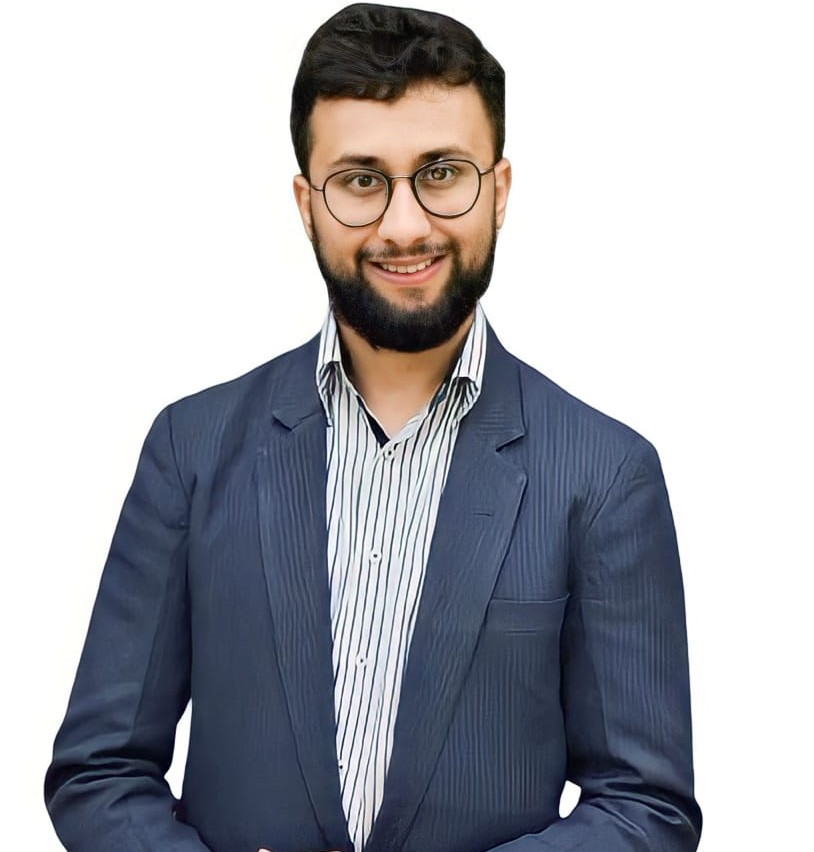

Taha Ahmad Mirza
Health AI · Brain MRI · Physics-Informed ML
I am a graduate researcher in Computational Science and Engineering at NUST (SINES), Islamabad, and a Research Scientist in the Computational Biomechanics Lab. My thesis uses physics-informed neural networks to estimate tumour-induced intracranial pressure from routine MRI, without invasive measurement.

Research Interests
Health AI, brain tumour MRI analysis and segmentation, multimodal learning for clinical prediction, physics-informed machine learning, patient-specific computational biomechanics (FEA/CFD), and rigorous evaluation of clinical ML models.
Thesis pipeline: Patient-Specific Estimation of Tumour-Induced Intracranial Pressure from MRI using Physics-Informed Neural Networks. Supervisor: Dr. Zartasha Mustansar.
Publications
Patient-Specific Finite Element and CSF Flow Simulation of Tumour-Induced Intracranial Pressure from MRI
Manuscript in preparation · 2026
Emergent Behavior in LLM Based Multi Agent Systems, A Review
In preparation
Feature Extraction for Breast Tumor Classification using Classical Machine Learning
In preparation · 2026
Research Experience
Research Scientist
Jan 2026 – PresentComputational Biomechanics Lab, NUST · Islamabad · PI: Dr. Zartasha Mustansar
- End-to-end intracranial pressure (ICP) pipeline: MRI → tumour and ventricle segmentation → patient-specific 3D brain mesh → FEA/CFD simulation → neural-network surrogate. ICP is normally measured invasively; the aim is a non-invasive estimate from routine MRI.
- Physics-based synthetic training data: 9 tumour-growth × CSF-obstruction scenarios per patient (~15k mesh nodes), at ~40 s per case on a laptop, built as a batch pipeline for 30+ MRI scans.
- BraTS 2025 glioma segmentation challenge: trained a 3D multi-class model on multi-parametric MRI (T1n, T1c, T2w, T2-FLAIR).
Research Assistant
Jan 2025 – Dec 2025AgriTech Project, SINES, NUST · Islamabad · PI: Dr. Absaar ul Jabbar
- Built an Urdu-first crop advisory system for cotton farmers (Flask + GPT-4.1 RAG backend, Android app, Urdu text-to-speech). It turns live soil-sensor readings and weather forecasts into field-specific fertilizer and irrigation advice. Patent filing in progress.
- 189-query, 4-arm ablation: stage-specific rule thresholds reached 87.8% fully correct advice, against 74.6% for full RAG and 5.3% for the LLM alone. I traced the −13.2 pp drop to retrieval overriding the thresholds (exact McNemar test, p = 8 × 10−4).
- Designed rule-based soil classification (growth-stage NPK limits, USDA salinity classes for EC) and 5-day forecast rules for rain and heat stress, served through Flask REST APIs with Firestore sync at < 90 s end-to-end response.
Industry Experience
AI Product Engineer
2025 – PresentLatin American Farms · Canada · Remote
- Scaling up a sensor-based monitoring system for soil moisture and temperature.
- Built a Flutter app with a Python backend for real-time data visualization.
Software Engineer I
Nov 2022 – Jan 2025Afiniti · Islamabad
- Analyzed call data (4.7M+ subscribers) using SQL, Python, and Excel to identify root causes, enabling $30K+ monthly revenue recovery.
- Built a Python tool to automate analysis of call logs, call statistics, sequence diagrams, and error detection.
- Performed unit, feature, UAT, and integration testing of Afiniti products before AI-based model deployment.
Intern
Sept 2021 – Dec 2021Open AIMP · Remote
- Implemented Spark-based data streaming for analytics pipelines, cutting reporting delays from hours to minutes.
Selected Projects
Video Vision Transformers · TensorFlow
- Multimodal pipeline over 487 longitudinal 3D T1 MRI scans (227 subjects) from ADNI. Each scan is linked to the nearest clinical visit (median gap 5 days), plus demographic and APOE/TOMM40 genetic data.
- Audited an earlier pipeline that reported 81% accuracy and found subject-level data leakage (487 scans inflated to 1,212 samples), test-set reuse for early stopping and label circularity. Rebuilt it with subject-level splits, baselines and bootstrap confidence intervals.
Data Collection and Training GPT-2
GPT-2 · BeautifulSoup
- Reduced training loss by 35% by pretraining GPT-2 on 500K+ custom dataset lines from .gov.pk sources.
- Built and fine-tuned a tokenizer from scratch to process 3M+ tokens for NLP tasks.
Stable Diffusion Web App
TensorFlow · Streamlit
- Built a Streamlit text-to-image app and evaluated generated image quality and prompt alignment with Hugging Face models and automated metrics.
HateSpeechInspector
Python · XLNet · React · Twint · PyTorch
- Trained an XLNet classifier on a 101K augmented dataset and built a web app that fetches Twitter (X) data in real time and predicts hate categories.
Breast Tumor Classification Using Data Analysis
Feature selection · Hypothesis testing · Random Forest
- Reached 98% accuracy with classical machine learning after cutting the feature set from 32 features to 3 through data analysis and feature engineering.
Education
National University of Sciences and Technology (NUST), SINES
MS in Computational Science and Engineering
Thesis: Patient-Specific Estimation of Tumour-Induced Intracranial Pressure from MRI using Physics-Informed Neural Networks
Supervisor: Dr. Zartasha Mustansar
GPA: 3.50/4.00 (3.67 in last semester)
Coursework: Machine Learning, Deep Learning, Large Language Models, Health AI, Data Analysis and Statistics
FAST National University of Computer and Emerging Sciences (NUCES)
BS in Computer Science
Coursework: Data Structures and Algorithms, Artificial Intelligence, Calculus, Probability and Statistics
Teaching
Graduate TA
Jul 2026 – Aug 2026Computational Biomechanics Lab, NUST · Islamabad
- Facilitated a 6-week internship program on applying AI in motion capture and rapid prototyping.
- Facilitated an intensive 9-day StemX event introducing AI to O and A level students.
AI Tutor
Nov 2025 – PresentPreply · Remote · profile
- Delivered 300+ hours of live instruction across 300+ individual lessons to 61 students worldwide.
- 4.6/5 average student rating, 100% response rate within 24 hours and 0% lesson cancellation rate.
Honors and Certifications
Technical Skills
Languages
Python, Bash, SQL
ML and Data
PyTorch, TensorFlow, Hugging Face Transformers, RAG, OpenAI API
Medical Imaging
Multi-parametric MRI, NIfTI, nnU-Net, 3D Slicer
Research Methods
Medical image segmentation, FEA/CFD simulation, PINNs, ablation studies, significance testing
Tools
Docker, Flask, Firebase/Firestore, Git
Contact
References are available on request and are listed in the PDF CV.